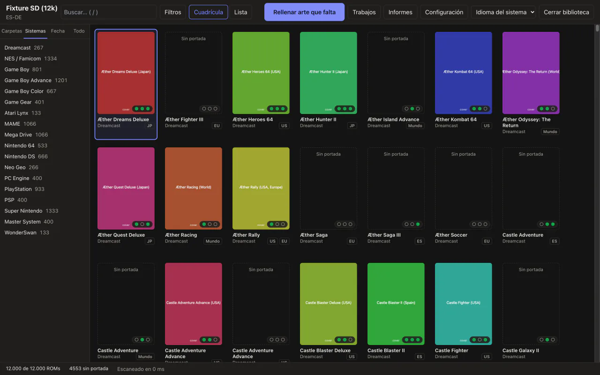
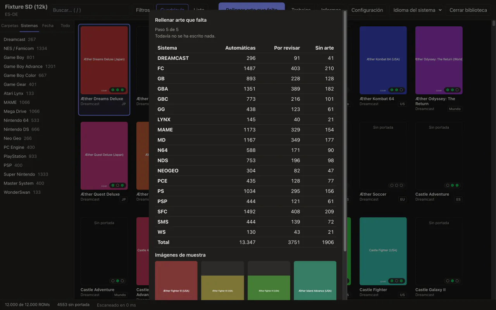
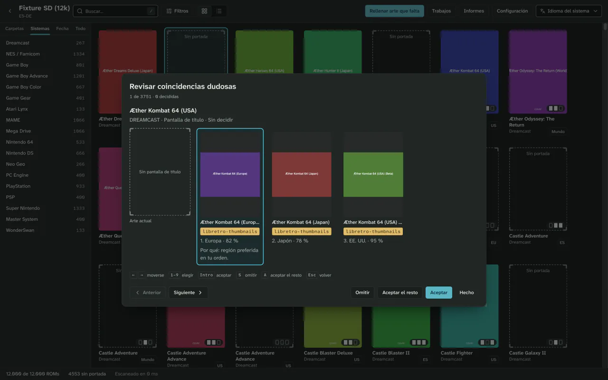
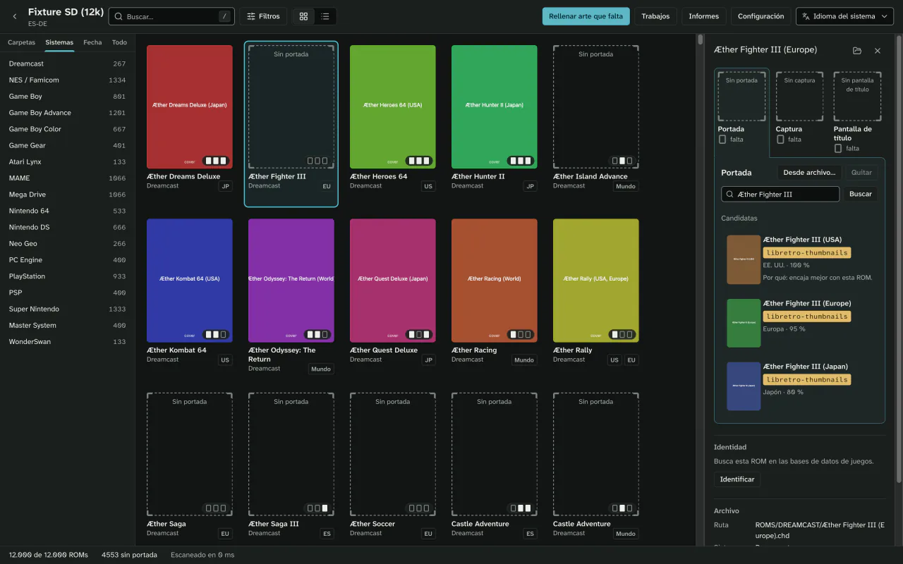
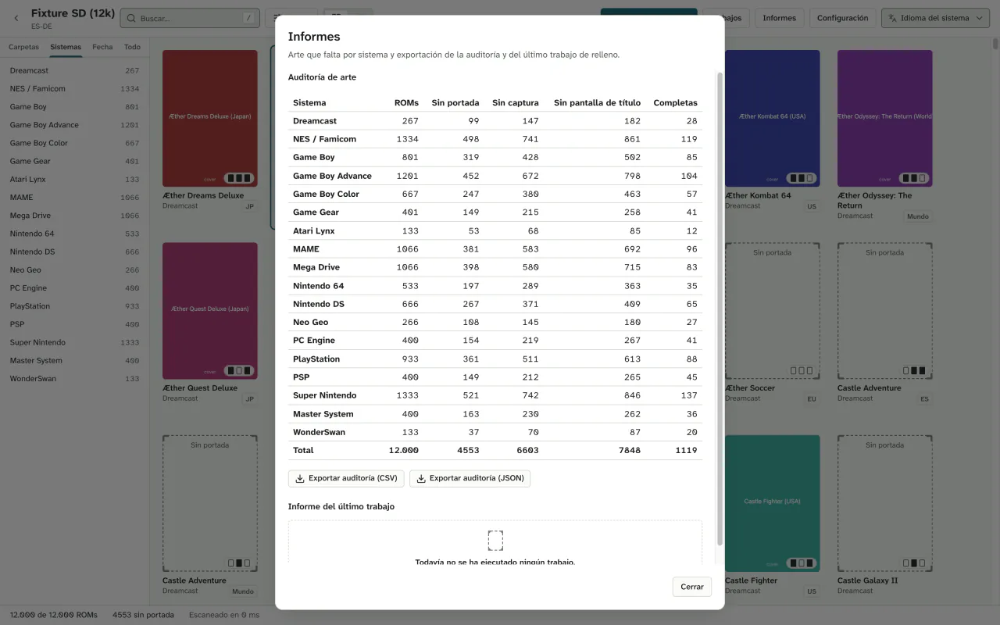
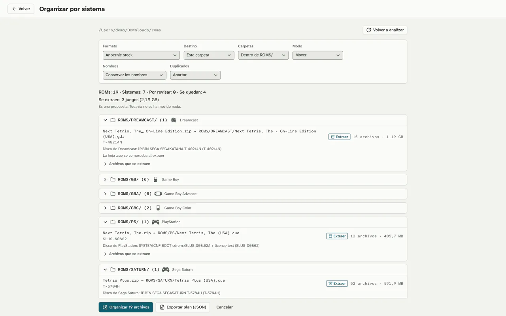
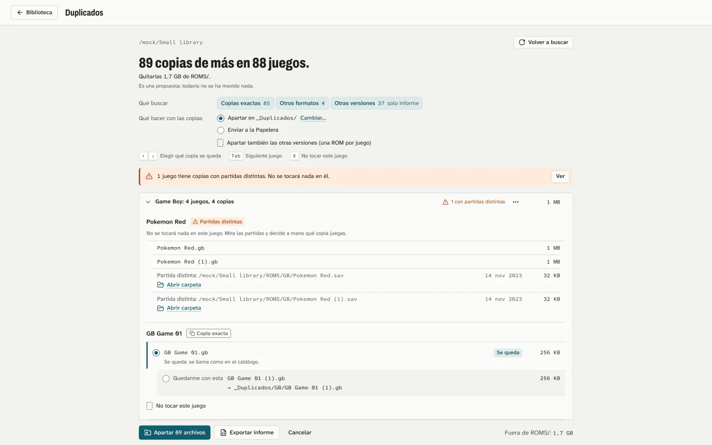

Cada ROM, con su portada.
Coverly ROMs revisa la tarjeta SD de tu consola portátil, te enseña qué juegos no tienen portada y las añade de una vez. Primero lo simula, y nada de lo que ya tienes se toca sin que lo pidas.
- Gratis
- Sin cuenta
- Sin telemetría
- Windows, macOS y Linux
Cuatro pasos. Los dos primeros no escriben nada.
-
Abre la carpeta o la tarjeta SD.
Coverly reconoce el formato de tu firmware o frontend y te enseña cada sistema con lo que le falta: portada, captura o pantalla de título. También con bibliotecas de más de 10.000 juegos.

-
Prueba el trabajo antes de hacerlo.
Cada ROM se identifica por su huella (CRC32, MD5 o SHA1) y, si no, por su nombre. El asistente elige la imagen según la región de la ROM, tus fuentes o los votos, y te enseña el plan entero.
Hasta que pulsas Ejecutar, no se escribe nada.

-
Decide solo las dudosas.
Las coincidencias seguras van solas. Las dudosas esperan en una cola que recorres con el teclado, y la elegida dice por qué.

-
Aplica, y deshaz si no te convence.
Las imágenes se escriben de una en una, sin dejar archivos a medias. Deshacer devuelve la tarjeta a como estaba. Y cualquier portada se cambia a mano desde la ficha del juego.

Tu tarjeta vuelve como estaba, con más portadas.
3 portadas añadidas. La que cambiaste está copiada fuera de la SD.
- Simulación por defecto
- Para escribir hay que pedirlo. En la terminal, con
--apply. - Solo lo que falta
- Las portadas que ya tienes no se sustituyen salvo que elijas hacerlo, y entonces se guarda una copia antes.
- Copias fuera de la tarjeta
- Las copias y el registro de cada trabajo van a la carpeta de datos de la app, no a la SD.
- Nada fuera de la biblioteca
- No escribe fuera de la carpeta que abriste, y los nombres de archivo valen para FAT y exFAT.
- Un fallo no lo para todo
- Si una ROM falla, el resto sigue. Sin conexión o con límite de peticiones, el trabajo se pausa y lo reanudas luego.

Más que portadas.
Coverly ROMs también ordena una carpeta de descargas por sistema, aparta los juegos que tienes repetidos y te deja ver la biblioteca de seis formas. Ordenar y apartar se simulan primero y se pueden deshacer.
Ordena los archivos comprimidos por lo que llevan dentro.
Abre zip, 7z, tar, gz, bz2, xz, zst y lz4, y reconoce cada uno por su contenido, no por la extensión. Los RAR, con un programa que ya tengas: unrar, 7-Zip o bsdtar, que viene con macOS.
Dentro de los archivos encuentra juegos de disco de PlayStation, Saturn, Dreamcast, Sega CD, PC Engine CD y Neo Geo CD. Al aplicar, los extrae a la carpeta de su sistema y comprueba el tamaño y el CRC de cada archivo. Si se corta, lo reanudas; si no te convence, lo deshaces.

Aparta las copias repetidas sin borrar nada.
Busca el mismo juego guardado más de una vez en un sistema por su contenido, nunca por el nombre. Se queda una copia, elegida con reglas que puedes ordenar, y te dice por qué.
Las demás van a _Duplicados/ dentro de la biblioteca, con sus partidas y su arte, o a la Papelera si lo eliges. Si dos copias tienen partidas distintas, no toca ninguna. Deshacer lo devuelve todo.

Seis vistas, y un icono para cada sistema.
Pasa de una a otra con ⌘/Ctrl+1 a ⌘/Ctrl+6. Cada biblioteca recuerda su vista, y cada sistema lleva su icono en la barra lateral, los filtros y los informes.
Escribe donde tu consola busca.
Ocho formatos de firmware y frontend, detectados al abrir la carpeta, y más de 50 sistemas con los nombres de carpeta de cada uno.
| Formato | Portada | Captura | Título |
|---|---|---|---|
| Anbernic de fábrica | |||
| GarlicOS | |||
| Onion OS | |||
| MinUI y NextUI | |||
| muOS | |||
| ES-DE | |||
| Batocera, Knulli y EmulationStation | |||
| RetroArch |
En Batocera, Knulli y EmulationStation también actualiza gamelist.xml, con deshacer. Para otro firmware, crea tu propio formato con vista previa.
# Qué falta (solo lee)
$ coverly audit /Volumes/SD --missing-only
4553 sin portada
# El plan, sin escribir nada
$ coverly fill /Volumes/SD
plan: 4553 · 0 escritos
# Ahora sí, sin las dudosas
$ coverly fill /Volumes/SD --apply --auto-only
✓ 4401 aplicadas
# Y si no te convence
$ coverly undo
↶ 4401 restauradasLas otras opciones, comparadas.
Las más completas funcionan solo en Windows o piden montarlas a mano; Coverly ROMs quiere ser la opción segura en los tres sistemas.
| Característica | Coverly ROMs | Skraper | Skyscraper | ARRM | Mini Scraper |
|---|---|---|---|---|---|
| Windows | Sí | Sí | — | Sí | Sí, x64 |
| macOS | Sí, Apple silicon e Intel | Sin versión nativa | Compilándolo tú | No | Solo Apple silicon |
| Linux | x64 y ARM64 | Con Mono | Compilándolo tú | No | x64 |
| App con ventana | Sí | Sí | No, terminal | Sí | Sí |
Formato Anbernic (Imgs/) | Directo | Configurándolo | Configurándolo y renombrando | Configurándolo | Directo |
| Cuenta | No | ScreenScraper, en la práctica | Recomendada | Recomendada | No |
| Simulación y deshacer | Sí | — | — | — | — |
Dónde van por delante
Skraper, Skyscraper y ARRM usan ScreenScraper y traen vídeos, mezclas de imágenes y metadatos. Coverly ROMs solo rellena imágenes. Mini Scraper también funciona sin cuenta y ya tiene versiones publicadas.
Fuentes: skraper.net, github.com/Gemba/skyscraper, jujuvincebros.fr y github.com/tzubertowski/mini-scraper-cfw.
Ya se puede descargar.
Versión {{release.version}}, del {{release.date_es}}. Gratis, para siempre.
macOS
macOS 11 o posterior, Apple silicon e Intel
Descargar .dmg ({{release.macos_arm.mib_es}} MiB)macOS 11 o posterior
Descargar para Apple silicon (.dmg, {{release.macos_arm.mib_es}} MiB)O para Mac con Intel (.dmg, {{release.macos_intel.mib_es}} MiB)Windows
Windows 10 y 11, x64
Descargar instalador ({{release.windows_x64.mib_es}} MiB)O el .msi ({{release.windows_x64_msi.mib_es}} MiB)Windows 10 y 11 (x64), Windows 11 (ARM64)
Descargar instalador (x64, {{release.windows_x64.mib_es}} MiB)O el .msi (x64, {{release.windows_x64_msi.mib_es}} MiB)O el instalador para ARM64 ({{release.windows_arm.mib_es}} MiB)O el .msi para ARM64 ({{release.windows_arm_msi.mib_es}} MiB)Linux x64
AppImage o paquete .deb
Descargar AppImage ({{release.linux_x64_appimage.mib_es}} MiB)O el .deb ({{release.linux_x64_deb.mib_es}} MiB)Linux ARM64
AppImage o paquete .deb
Descargar AppImage ({{release.linux_arm64_appimage.mib_es}} MiB)O el .deb ({{release.linux_arm64_deb.mib_es}} MiB)Solo la línea de comandos
Casi listo para descargar.Ya se puede descargar.
La primera versión se está preparando. Cuando salga, aquí tendrás los instaladores para macOS, Windows y Linux, y la línea de comandos.
Todavía no hay versión publicada
Este hueco se rellena solo el día que salga. Mientras tanto, puedes compilarla desde el código fuente: el README explica cómo.
Ya ha salido la versión . Los instaladores para cada sistema y la línea de comandos están en la página de la versión.
La primera vez que lo abras
Aún no está firmado con un certificado de Apple ni de Microsoft, así que macOS y Windows te avisan la primera vez. Sigue estos pasos solo con un archivo de las versiones de este proyectoversiones de este proyecto, comprobado con SHA256SUMSSHA256SUMS.
- macOS dice que la app está dañada o que Apple no puede comprobarla. No lo está. Mueve Coverly ROMs a Aplicaciones y quita la marca una vez, en Terminal:
O pulsa «Abrir igualmente» en Ajustes del Sistema › Privacidad y seguridad. Esa marca es la comprobación que te protege de una descarga manipulada.
xattr -rd com.apple.quarantine "/Applications/Coverly ROMs.app" - Windows muestra «Windows protegió su PC»: elige «Más información» y luego «Ejecutar de todas formas». En Windows 10, si falta WebView2, el instalador lo descarga.
- Linux: marca el AppImage como ejecutable (
chmod +x). El .deb, x64 o ARM64, depende de libwebkit2gtk-4.1-0 y libgtk-3-0, que apt instala con él.
Lo que aún no hace
- ScreenScraper: previsto, aún no disponible.
- Vídeos, mezclas de imágenes, marquesinas o logos.
- Editar metadatos, renombrar o verificar ROMs.
- Funcionar en la propia consola.
- Reconocer discos de PlayStation 2 o 3DO dentro de archivos.
- Aún no se ha probado en consolas reales.
Antes de que preguntes.
¿Es gratis?
Sí. No cuesta nada, no pide cuenta y no tiene versión de pago. El código es AGPL-3.0.
¿Trae ROMs o portadas?
No. Coverly ROMs no incluye ROMs, BIOS ni arte de juegos. Las imágenes se descargan de libretro-thumbnails y, si pones tu propia clave, de SteamGridDB. Cada imagen es de sus dueños.
¿Va a sobrescribir mis portadas?
No, salvo que lo pidas. Por defecto solo rellena lo que falta. Si eliges sustituir, antes guarda una copia en la carpeta de datos de la app, no en la tarjeta, y Deshacer la devuelve.
¿Necesito una cuenta?
No. libretro-thumbnails funciona sin cuenta. SteamGridDB es opcional: usa tu propia clave, que se guarda en el llavero del sistema.
¿Con qué consolas funciona?
Con las que usan los formatos de Anbernic de fábrica, GarlicOS, Onion OS, MinUI y NextUI, muOS, ES-DE, Batocera, Knulli y EmulationStation, o RetroArch. Para otro firmware puedes crear tu formato con vista previa. Aún no se ha probado en consolas reales.
¿Por qué avisan Gatekeeper y SmartScreen?
Porque las descargas aún no llevan certificados de Apple ni de Microsoft. La primera vez, en macOS quita la marca de cuarentena o pulsa Abrir igualmente; en Windows, elige Más información y Ejecutar de todas formas. Hazlo solo con archivos de las versiones de este proyecto.
¿Borra los juegos repetidos?
No. Los aparta en _Duplicados/, dentro de la biblioteca, o los manda a la Papelera si lo eliges, y Deshacer los devuelve. Si dos copias tienen partidas distintas, no toca ninguna.
¿Envía datos a algún sitio?
No hay telemetría. La app solo se conecta a las fuentes de arte y, si no lo desactivas, a la comprobación de actualizaciones al arrancar. Las imágenes se recodifican, así que no llevan metadatos.
¿Cómo se actualiza?
Desde la propia app, con versiones de GitHub Releases verificadas con minisign antes de instalarse. Hay canal estable y beta, y nunca se reinicia en mitad de un trabajo. La línea de comandos usa coverly update.
Abre la tarjeta. Mira lo que falta.
Lo demás lo decides tú, con la simulación delante.
De las 4553 del ejemplo, 152 siguen sin portada: ninguna fuente tiene la suya. Coverly te lo dice en lugar de inventarla.